The Pro Slice - Stroke Components¶
John Yandell¶
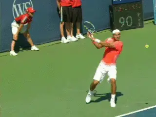
The pro backhand slice - more spin than the fiercest forehands.
In the first article in this series, we looked at the astounding levels of spin on the pro slice backhand. We determined that slice backhands were actually spinning as fast, and usually faster, than even the fiercest topspin forehands. (link.)
Looking at dozens of examples, we found Federer and Nadal both averaged over 3500rpm. This is an even higher average spin rate than Nadal's topspin forehand, which is 3200rpm. It's substantially higher than the forehands of either Federer or Djokovic which are in the 2700-2800rpm range.
In fact we measured one Federer slice backhand that equaled the fastest spinning Pete Sampras second serve ever recorded - about 5300rpm. We also noted that Novak Djokovic, although he still generated substantial spin, hit his slice backhands with significantly less rotation than Federer and Nadal, averaging 2800rpm, virtually the same as his forehand.
Which all leads to the next question - [how does this spin happen? Let's break down the pro slice backhand into its technical components.] Let's see how Roger and Rafa do it, what Novak does, and how they are all similar and different.
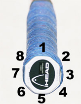

The relationships between the racket bevels, the heel pad and the index knuckle determines the grip.
Grip
Grip for the slice can be a controversial issue, similar to what we saw in discussing the volleys (link). Let's use our trusty grip system again to see how this works.
This system lays out the 8 bevels of the racket handle, and the two key points that connect the hand to the bevels. It's been widely copied by our competitors, so if you see it somewhere else, remember, it was (another) TPA first.
Some coaches prefer a relatively strong grip for the slice backhand, with the heel pad on top of the frame and the index knuckle on the next bevel down. This would be a 2 / 1 in TPA terminology. This is what I personally would call an eastern backhand grip.
But in looking at the video of the three top players in the world, I think they all are a little shy of this position. Each is somewhere on the spectrum between the eastern backhand and what I call continental, which shifts everything a half a bevel toward the forehand. Again, in TPA terminology, what I think of as a continental would be a 2 1/2 - 1 1/2.
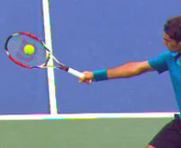
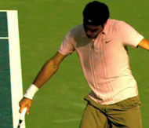
Federer has his index knuckle close to the center of bevel 2 and much but not all of his heel pad on top of the frame on bevel 1.
It's important to note that many coaches will use these same names to describe slightly different grips, and this is true for some of our great contributors. And who knows, maybe their terms are better than mine.
But if you encounter this, don't let it confuse you. Remember it's not the name assigned to the grip, it's the grip itself and how the hand connects with the racket that really matters.
Federer probably has the strongest grip of the three. His index knuckle appears to be near the center of bevel 2, close to an eastern backhand, but probably shifted slightly down.
The heel pad of his hand is mainly, but not completely, on top of the frame on bevel 1.
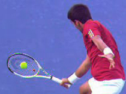
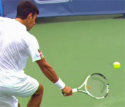
Novak is a little weaker probably than Federer, with both his heel pad and his knuckle shifted a little more downward toward the forehand.
If you look from the rear view, you can see how the heel pad is shifted a little bit downward. You can tell this because the top of the handle is partially visible instead of completely covered by his hand. The heel pad is mainly on bevel 1 but partially on bevel 2.
Djokovic's grip is pretty close to the same as Roger's, but I think just slightly weaker. His index knuckle also appears to be mostly on bevel 2 but shifted a little further down. From the rear view, you can also see a little more of the top of the handle than with Roger, so the heel pad is shifted down a little more toward bevel 2.
Compared toFederer or Djokovic, Nadal's grip is significantly weaker. To me it appears that his index knuckle is on the edge between bevels 2 and 3. His heel pad appears to be partially on top but mostly on bevel 2. So Nadal's grip is shifted a little more to the forehand than even what I call the continental in TPA terminology.
As with grips on all the strokes, these are just my best estimates based on looking at high speed footage from multiple angles. It's very difficult to be precise, and things look different sometimes from different views.
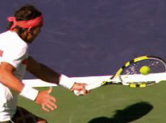
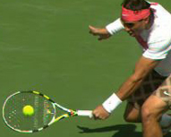
Rafa has the slice grip shifted most toward the forehand. His knuckle seems to be on the edge between bevels 2 and 3. Part of his heel pad is on top of the handle, but it appears mostly on bevel 2.
But it's the best we can do without asking the players to let me on court to film them at close range in a tour match, which is unlikely to happen. (Hey, maybe in practice someday, who knows?)
Also, telling the differences on the slice grips is particularly tricky because they are typically less than the other groundstrokes. In fact, as we'll see below, one of the best clues to understanding grips on the slice is not to look at the hands, but rather the contact points.
So we can always evolve this discussion. And if you have other images or a different viewpoint on the exact hand positions, let us know and post them in the Forum.
Still, if we assume that my estimates are in the ball park, the next question is this: how do the players establish them? And the answer is in different ways.
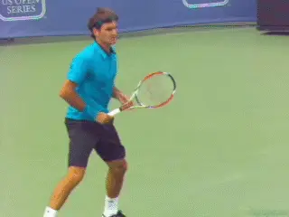
A range of grips in the ready position before the shift for the slice during the unit turn.
Our three players all have different grips in the ready position and so make different degrees of grip shift to get to the slice. Federer and Djokovic appear to wait with intermediate grips, but Nadal is much closer to his under the handle forehand grip in the ready position.
Federer's intermediate grip is shifted the more toward the top of the frame than Novak, with his knuckle already on the edge between bevel 2 and 3. That makes sense given his modified eastern forehand grip.
Compared to Federer, Nadal waits with his hand still under the handle. This may explain help explain why he doesn't shift as far on top as Federer or Djokovic, since he has further to go.
Interestingly, Djokovic's forehand grip is as extreme as Nadal's. But he waits in a position that is much closer to Federer, something like an eastern forehand grip with the index knuckle on bevel 3. This may help explain why even with his extreme forehand his slice grip is closer to Roger's. (link for more on Djokovic's forehand grip and his forehand in general.)
It's got to be easier to make all the grip shifts, to the forehand, backhand, slice, volley--from some position closer to the middle, and probably the majority of the players do this. But, on the other hand, Nadal makes his slice work with the less extreme grip. You wonder though if it's truly a grip by choice, and if his starting position limits him in how far he feels he can go.
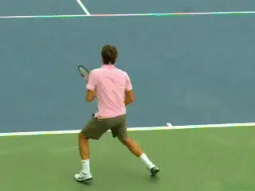
A great checkpoint: shoulders square to net at the ball bounce.
Shift to Slice
[Regardless of the starting position, the players all start to shift to their slice grips during the start of the motion. This is what we call the unit turn, the sideways turning of the torso and feet.]
As with the other groundstrokes, the unit turn on the slice can start with a wide variety of step combinations. (link.) Unlike the other groundies, on the slice the players also start to raise their hands and racket upward. This makes sense when we see how high the racket eventually reaches at the top of the backswing.
After this initial unit turn, as with the other groundstrokes, the shoulders and the rest of the torso continue to rotate. At about the time of the bounce on the court, the line of the shoulders reaches 90 degrees to the net or a little more. This is a good checkpoint for the timing of the preparation.
But the shoulders continue to turn significantly further after the bounce, going up to another 30 degrees or so when they are fully turned. This is similar to the one-handed topspin backhand. (link.)
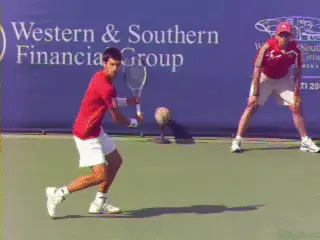
The line of the stance and the line of the shoulders are parallel, allowing more turn and forward rotation.
Stance
The use of stances is also similar on the slice and the one-handed backhand drive. Like the topspin drive, the slice can hit from a neutral or even an open stance, but the majority of slices in pro tennis are hit with a closed stance, with the player stepping forward and across the body on a diagonal of about 30 to 45 degrees or even more.
The explanation for the closed stance on the slice is the same as for topspin drive and is related to the shoulder turn. If you draw a line across the tips of the feet, you'll see that it is roughly parallel to a line across the shoulders. The shoulders turn 30 to 45 degrees past perpendicular to the net, and the line across the feet is parallel and along this same angle. (link.)
Although players have less total body rotation on the one-hander than the two-hander or the forehand, the closed stance and the line of the torso nevertheless allows them to create significant forward hip and shoulder rotation going into the contact. If you look at the line of the shoulders at contact, you see that they have rotated 30 or 45 degrees from the full turn and are either sideways to the net or slightly open.
Backswing
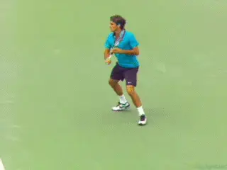
The extreme wrap at the top of the backswing.
When we look at the backswing, we start to understand how the amazingly high levels of spin are generated on the pro slice. Looking first at Federer and Nadal, we see the racket hand can reach eye level or even higher. However, the precise height appears to vary depending on the height, speed, and spin of the oncoming ball, and the amount of spin the player is trying to hit.
Both Nadal and Federer often wrap the hitting arm almost completely around the body at the top of the backswing. At maximum wrap, the elbow can be 90 degrees.
The tip of the racket at this point actually crosses behind the player's body. In the extreme case, the shaft of the racket is parallel with the baseline, with the tip of the racket pointing perpendicular to the sideline.
As with the height of the backswing, the exact amount of this wrap around the body varies with the ball and the shot intention. In general Federer tends to have the most wrap at the top of the backswing. Nadal appears to have slightly less on most balls, although he definitely reaches the extreme position with the shaft of the racket parallel to the baseline in some examples.
Djokovic
When we look at Djokovic, we see something far less extreme. Novak rarely raises his hand above the top of his shoulder, and typically his hand reaches about the mid chest area, although it is sometimes lower as well.
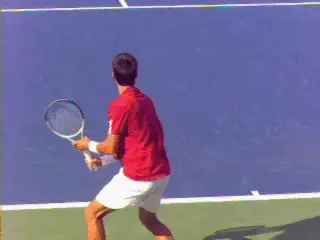
Novak: less extreme backswing, lower contact points.
His wrap around his torso in the backswing is also less than Federer and Nadal. The tip of his racket rarely crosses behind his body. The angle of the shaft of his racket to the baseline is also much less, more like 30 or 45 degrees.
This difference seems to be at least partially related to contact height. [Both Roger and Rafa often answer high topspin with slice. This means that on some balls they make contact at shoulder level or even slightly above, and many are at the mid chest level.]
[Djokovic on the other hand hits slice predominantly on lower balls, waist level or a little higher at the highest.] He seems more likely to answer slice with slice than to try to use slice to neutralize topspin. This is certainly consistent with his lower spin rate averages.
Hitting Arm Structure
So the top pro players have significant variations in the size of the backswing and start the forward swing from different positions and heights on different balls. But there is one key element in the forward swing all three of our players share.
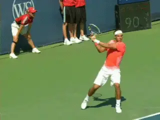
The hitting arm structure is straight on the pro slice--and all good slice backhands.
[This is the shape of the hitting arm prior to contact. It's straight.] This straight arm hitting structure is critical, just as we saw on the topspin backhand.
There are differences however in when the players reach this position. Nadal gets his arm straight very quickly just at the start of the forward swing. Federer is later, closer to contact. And, once again, Djokovic is in between.
These are fractional differences in the timing, but the point is that they set the straight arm up well before contact and maintain this position throughout the forward swing and well into the followthrough.
As the video shows, the elbow begins to relax and bend again only when the players reach the recovery phase, with the racket moving backwards away from the player.
This straight arm position is critical for an effective slice, and this is especially true in club level tennis. Many players copy the extreme wrap backswings of the pros, even when the ball is low. Unfortunately they miss the much more vital straight arm element and come through contact with the arm bent, leading with the elbow.
This leads to late contact, loss of power, lack of control, and also, the inability to hit crosscourt. And maybe, tennis elbow. Other than that, it's not a problem.
For the club player I highly recommend two other great articles that talk about the key elements on the slice and the arm postion, the first by Scott Murphy (link) and the other by Trey Waltke (link).
Swing Plane
The most important step in understanding how the players are generating 3000plus rpm of spin on the slice backhand is to look at the swing plane to the contact. We all know the clichés: "swing low to high for topspin and high to low for slice." What is stunning though is just how steep the downward plane of the swing actually is in the pro slice.
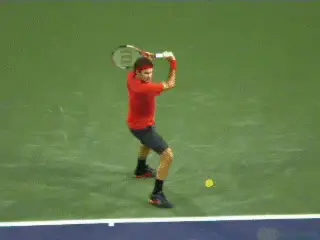
Watch the front shoulder muscles bring the arm forward and down to contact.
Let's see how the players come out of the wrap around backswing and start the racket down to the ball. Then let's follow the path of the racket to the contact, see how far the swing continues down, then see what happens in the followthrough.
We've already seen that at the start of the swing, the torso starts to rotate forward and around, going from the closed position in line with the stance to roughly sideways at contact. Obviously this rotation is contributing somewhat to the motion toward contact.
[But most of the downward and forward movement of the hitting arm comes from the front shoulder.] Watch how the players use the front shoulder muscles. The hitting arm and racket are something like a gate on the hinge of the shoulder. This movement from the shoulder is what brings the hitting arm structure around, forward and down.
Notice as this happens how the elbow starts to straighten out. [A common mistake here at the club level is to pull the elbow forward as the hitting arm is coming down. This makes achieving the straight arm hitting position impossible.]
It also causes the front shoulder to over rotate. The end result is late contact with the hitting arm still bent. That's a recipe for a bad slice and maybe tennis elbow. So let's just say it's a good idea to get the hitting arm straight as soon as possible, closer to the timing of Nadal on this critical element.
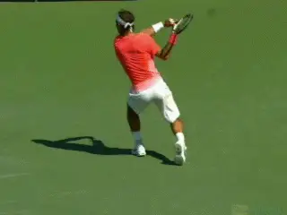
The swing plane can be downward on a 50 degree angle.
Downward Angle
Now let's look at that amazing downward angle. As the forward swing starts, the racket hand comes down and around and aligning the racket head behind the ball as it moves to the contact. What is amazing here is how steep this downward motion actually is.
As usual, I'd love some 3D data from Brian Gordon that would make this analysis more scientific, but some rough measurements off the high speed video show the racket appears to be moving downward on angle of around 50 degrees.
Compare that with what we know about topspin. It is commonly accepted that to create topspin on the forehand the racket needs to travel upward on about a 30 degree angle. So the downward angle on the slice is much steeper. And that makes sense since we already seen that the spin levels are generally higher.
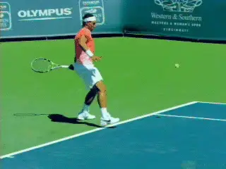
The pro slice swing plane approximates Nadal's forehand.
Interestingly, the swing plane on the slice is roughly the same angle as on Nadal's most extreme forehands with the over the head finishes (though moving in the other direction). Again, according to my very rough measurements, that swing plane angle is around 50 degrees. Whatever the precise measurements, it's obvioius the swing is radically high to low.
Sideways Component
But there is another radical element, that is as surprising, maybe more surprising. [And this is the sideways motion in the swing.]
Watch how far to the player's right the racket moves after contact (to the left obviously for Nadal.) The swing actually appears to make something like a 90 degree turn.
Watch how after contact the hitting arm can end up actually pointing at the sideline! Do you think this means that there is significant sidespin on the pro slice?
That has got to be the case. It's something like the windshield wiper where most of the sideways movement occurs after contact. But the sideways motion is starts, changing the angle of the racket path slightly contact. We can see this in the path the ball takes through the air, and the sideways movement we often see at the bounce.
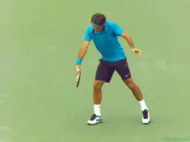
Watch the arm and racket make a 90 degree turn after contact.
What percentage is underspin and what percentage is sidespin in the pro slice? That is going to have to await further analysis, but we can imagine that on a slice backhand spinning at 3500rpm, the sidespin component is significant, I'm thinking sometimes as much as 30 percent - similar to the maximum topspin component in a spin serve. (link.)
The slice swing path - radically downward and radically sideways at the same time--helps explain one aspect that appears quite odd when you study the pro slice in super slow motion. This is the position of the racket tip relative to the racket hand as the player moves into the followthrough.
On a more classical slice drive, the racket tip finishes above the hand, typically pointing up toward the sky at 30 to 45 degrees. You do see this finish in the modern pro game, but only on a certain percentage of balls.
On a large percentage of all pro slice backhands, the racket tip actually points directly downward at the court all the way into the followthrough. [This means the shaft of the racket is literally at a 90 degree angle to the court surface.]
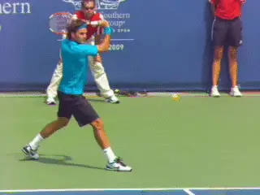
With the extreme downward swing, the racket tip and finish pointing at the court.
This racket angle doesn't seem to be some independent technical element that the players can vary. It appears to be an inherent component of the path of the swing.
Because this position is so radical, the racket tip stays below the level of the racket hand. Sometimes it is pointing at literally the same angle at the end of the followthrough as at the contact.
Novak
They may be common, but these radical elements don't happen for all pro players on all balls. When we compare Novak to Roger and Rafa, we see that, as with the backswing, this effect is less frequent and less extreme in Novak's slice backhand.
His racket and hand generally starts to the ball from a lower position, and the angle of the downward swing appears substantially less. If we look at his racket tip, we also see that it frequently finishes in the traditional position, above the hand and pointing upward.
But again, an important caveat here is the average contact height for Djokovic is much lower. This may explain why his swing shape is different. Or his swing shape may explain why he doesn't hit as much slice on higher balls.
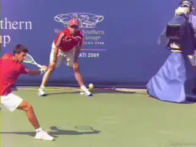
A lower backswing and a more conventional finish with the racket tip above the hand.
Contact
When we look at the player's from the side view at contact, we can see substantial differences in the three players. Also we can see a direct relationship between the contact point and the players' grips.
In fact it's probably easier to discern the relative strength of the grips by looking at the contact than by looking at the hands. The stronger the grip the earlier the contact.
So Roger who has more of his hand on top of the handle makes contact further in front than either Rafa or Novak. You can see this in the amount of space between the hitting arm and the torso and front leg.
Rafa, with the weakest grip, makes contact the furthest back, barely at the front edge of the leg. Novak is in between on the grip, and in between on the contact as well, although closer to Roger than Nadal.
The important point here for all players is that there is no absolute right contact point on the slice backhand. It's primarily grip dependent, just as on the one-handed topspin drive. What would therefore be late for one player with one grip can on time for another. So the images of these players at contact can serve as models only after they understand their own grip structure.
Angle of the Racket Face
Another disputed point in hitting and teaching the slice is the actual angle of the racket face at contact. I have heard experts insist that the racket face must be perpendicular to the court surface at contact to create slice.
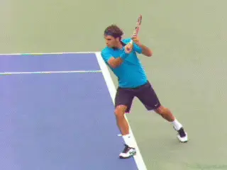
Note the slightly open racket face - and the position of contact related to grip.
In fact that appears to be the case in a limited number of examples. But in the vast majority of the high speed video clips in the archive, the racket face is beveled back slightly, say at 15 degrees plus or minus with the bottom edge of the racket therefore leading the top edge slightly at contact.
To me this makes sense that the face stays slightly open. The physics of the ball/string/racket interaction are undoubtedly quite complex in determining the speed, angle of trajectory, and type and amount of spin.
But the beveled racket face probably allows players to hit through the ball somewhat more and still generate high spin levels. Watching club players who have become obsessed with the idea that the face must be perpendicular at contact, you normally see the ball floats high and soft with reduced pace, and sometimes, reduced spin as well.
Torso
Even though the hitting arm can come almost insanely far around and point at the side fence after contact, the torso still stays relatively sideways. We noted above that the shoulder rotate maybe 30 to 45 degrees from the full turn position to the contact. There is a comparable amount of rotation from the contact to the finish.
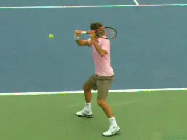
The range of backward movement of the rear arm - and the torso rotation after contact.
This is related to the movement of the back arm. [In general on any one-handed backhand, whether a drive or slice, the arms oppose in the forward swing. That is, the back arm moves backwards as the hitting arm swings forward through the ball.]
However, with our three players we can again see a range of movement with the rear arm. This also seems to correlate with how far the torso eventually comes around.
Roger's back arm motion is extreme to say the least. As his left arm moves backwards it points at the back fence, but continues to move far past that position, often pointing behind him at a 45 degrees or more. If nothing else, that shows his incredible flexibility.
But it also seems to correlate with his relatively sideways torso position.
Rafa's arm movement is far less and at the other end of the extreme. Although his opposite arm does move backward somewhat, Rafa doesn't even straighten it, keeping the elbow bent and tucked in toward his waist. This is probably related to his increased torso rotation at the end of the movement and also the way his feet seem to come around further and sooner than Federer.
As we've seen, Djokovic's motion is in so many respects between either Federer or Nadal, and the same applies here. Watch how his arm goes straight back but not radically behind his body like Roger. This motion moderates the front shoulder rotation, so it is also less than Nadal.
Followthrough
So a final complexity to look at on the pro slice is the high finish. All three players finish with the racket hand substantially above contact, sometimes reaching shoulder level even when the racket tip is pointing down at the court. Other finishes can be higher still, reaching eye level.
If the forward swing on the pro slice is radically downward and then across--and if the upward motion can't affect the ball after it has left the strings--why pro players still finish high?
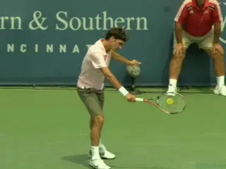
After contact, the finish is high, often reaching shoulder level.
The answer is there is no where left to go. All tennis swings need a deceleration phase. The racket has to slow down gradually after contact if the player wants to avoid putting dangerous stress on the joints and the muscles.
On most pro swings, the hitting arm and racket reach the bottom of the potential range of motion shortly after contact. So the only way left to go is up.
Players who aim for the contact and don't allow the racket to move freely through the finish also probably lose racket head speed. To maximize acceleration, the swing needs to be free and relaxed, and this means allow the arm and racket to continue and to move and this means upward on the slice.
As we will see when we start to compare the pro slice to the slice in club game, the high finish has additional purpose when players drive through the ball with underspin and lower levels of contact height and ball speed. One question is whether this type of swing can even work in the pro game, and if so would it be more or less effective on which balls when. More on that question and whether it's possible to answer later on.
All and all the slice backhand is a fascinating shot. At the pro level it is difficult to understand and, I admit, something I've been putting off tackling until now. And now, I'm glad I'm in! Stay tuned for more.

John Yandell is widely acknowledged as one of the leading videographers and students of the modern game of professional tennis. His high speed filming for Advanced Tennis and TPA have provided new visual resources that have changed the way the game is studied and understood by both players and coaches. He has done personal video analysis for hundreds of high level competitive players, including Justine Henin-Hardenne, Taylor Dent and John McEnroe, among others.
In addition to his role as Editor of TPA he is the author of the critically acclaimed book Visual Tennis. The John Yandell Tennis School is located in San Francisco, California.